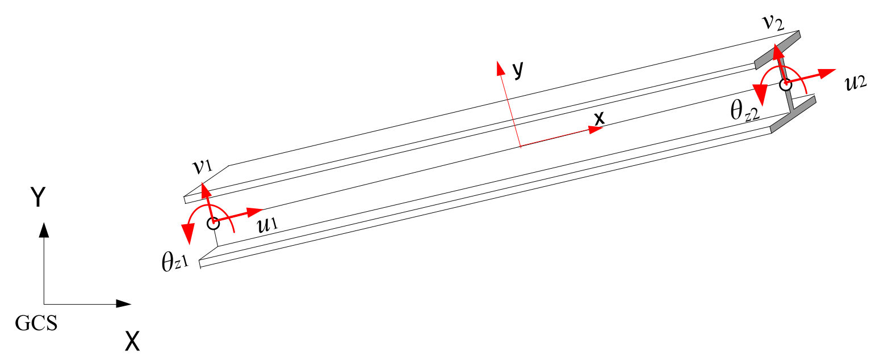

Beam 요소
보 요소는 부재 종축(ECS 상의 x 축)의 치수가 타 방향의 치수에 비해 큰 부재로 축력, 휨, 비틀림 등을 전달하는 구조요소(structural element)이다. 요소 타입과 단면, distribution은 다음과 같다.
■ 요소 타입
- B2D2H : 2 dimensional 2 node, Bernoulli beam(Hermitian shape function used)
- B2D2MH : 2 dimensional 2 node, Timoshenko beam(Modified Hermitian shape function used)
- B3D2H : 3 dimensional 2 node, Bernoulli beam(Hermitian shape function used)
- B3D2MH : 3 dimensional 2 node, Timoshenko beam(Modified Hermitian shape function used)
■ 요소 단면
- Beam: 보 요소단면. 1개 이상의 Cell로 구성
■ 요소 개별 물성치(Distribution)
- BeamCS : 3차원 보요소의 ECS를 정의
- BeamEndRelease : 요소 단부의 힌지 조건 부여(moment release). Rx1, Ry1, Rz1, Rx2, Ry2, Rz2의 조합. 예를 들어 Rz1|Rz2.
전단변형을 무시하는 B2D2H, B3D2H는 비선형 재료 모델을 지원하며, 변단면을 모사할 수 있다. 반면에 전단변형을 고려하는 B2D2MH와 B3D2MH는 재료가 탄성일때만 적용가능하며, 이론적으로 변단면 정식화가 불가능하기 때문에 단면 물성치가 변단면으로 주어질 경우 평균값을 요소내에 적용한다.
2차원 보 요소의 ECS는 그림 4.2-1과 같이 부재축인 x축과 이에 직교하는 y 축으로 정의된다.

Fig. 4.2-1. 2차원 보요소의 ECS
3차원 보요소의 경우 \(\small x\)축은 부재축으로 정의할 수 있지만 \(\small y\)축과 \(z\)축은 기준 벡터 \(\rm r\) 와 추가 단면 회전각 \(\theta\)에 의해 결정된다. 그림 4.2-2는 단면 회전각 \(\small \theta=0\)인 경우 ECS를 설정한 예이다. \(\small \rm r\) 벡터의 디폴트 값은 그림 4.2-3과 같이 \(\small \rm r = (0,0,1)\) 로 설정한다. 예외적으로 부재축이 전체좌표계 Z와 평행한 경우에는 \(\small \rm r = (1,0,0)\)이다. 이때 부재축이 Z와 1:100 경사도에 해당하는 사이각(약 0.573도)내에 존재하는 경우로 평행여부를 판단한다.
단면회전각 \(\small \theta\)는 이용해 \(\small \rm r\) 벡터로 설정된 좌표계에서 추가적으로 회전된 좌표계를 ECS롤 정의하도록 한다. 단면회전각 \(\theta\)의 디폴트값은 0이다.
Fig. 4.2-2. 3차원 보요소의 ECS

Fig. 4.2-3. 디폴트 기준 벡터
Hyfeast에서 보 요소의 기준축은 절점을 잇는 선분을 기준으로 정의되며, 도심일 필요는 없다. 하지만 정식화가 도심에서 이루어진다. 특히 단면력 및 단면변형 등은 도심을 대상으로 계산되므로 주의한다.
보 요소의 단면인 Beam 단면은 같은 재료를 적용하는 기하 형상으로 정의되는 Cell의 집합으로 정의한다. 다음 그림은 사용가능한 셀을 나타낸 것이다.

Fig. 4.2-4. 보 단면의 셀 (viewed from the local +z direction)
다음은 셀과 관련된 사항을 정리한 것이다.
- 단면을 하나의 cell로 구성하면 균질 보 단면이며, 두 개 이상의 cell로 구성하는 합성 보 단면이다.
- 두 개 이상의 cell로 보 단면을 구성하는 경우 사용하는 cell의 타입에 따라 제한 조건이 있다.
- Value, Rectangle, Circle, WFlange, WFlangeYUp 셀은 탄성재료(IsoElasticity)만을 허용하며, 그림 4.2-6처럼 미리 정의된 몇 개의 재료점에 대해서만 응력(S), 변형률(E), 온도(T)를 출력할 수 있다
- Point, Layer, Mesh 셀은 탄성/비탄성 재료 모두 사용가능하다.
- Point 셀은 셀을 구성하는 모든 재료점에서 응력(S), 변형률(E) 등 사용된 재료의 필드값을 출력할 수 있다.
- Layer 셀은 각 층의 상하단에서 응력(S), 변형률(E) 등 사용된 재료의 필드값을 출력할 수 있다.
- Mesh 셀은
*CellMeshPonts로 메쉬를 수성하는 재료점을 미리 정의하는데, 이들 재료점에서 응력(S), 변형률(E) 등 사용된 재료의 필드값을 출력할 수 있다. - Value, Rectangle, Circle, WFlange, WFlangeYUp 셀은 단독으로 존재하거나 Point 셀과의 조합만이 허용된다.(예. Rectangle (OK), Rectange+Point (OK), Rectangle+Rectangle (NG), Rectange+Value(NG))
- Layer 셀은 Layer 셀과 Point 셀과의 조합만이 허용된다. (예, Layer (OK) Layer+Mesh(OK), Layer+Point (OK), Layer+Layer+Point (OK), Layer+Rectangle (NG))
- Mesh 셀은 Mesh 셀과 Point 셀과의 조합만이 허용된다. (예, Mesh (OK) Mesh+Mesh(OK), Mesh+Point (OK), Mesh+Mesh+Point (OK), Mesh + Rectangle (NG))
- Point 셀은 주로 다른 타입의 셀과 조합되어야 하나, 단독으로도 사용될 수 있다. (예, Value+Point(OK) Rectangle+Point(OK), Point (OK), Point+Point(OK))
- Point 셀을 사용된 단면의 경우 Point 셀은 휨과 압축에만 기여하고 전단이나 비틈의 계산에는 기여분이 없다. 예를 들어 단면상수를 계산하는 단계에서 EA, EI 등은 Point 셀의 기여분을 고려하여 계산하지만 GJ, GAs 등을 계산에는 고려되지 않는다. (EA, EIy, EIz, EIyz)
- Layer 셀은 2차원 보요소(B2D2H, B2D2MH)에서만 사용가능하다.

Fig. 4.2-5. 탄성 셀의 출력 재료점 (viewed from the local +z direction)
Example
*Material, TYPE=IsoElasticity, Name=mat
200E6, 0.3
*Section, Type=Beam, Name=value1
*Cell, Type=Value, Mat=mat
0.1, 0.442, 0.442, 0., 0.12, , 0.1, 0.1, 0.5,0.5 # a, Iy, Iz, Iyz, J, Asy, Asz, ys, zs, yc, zc
*Section, Type=Beam Name=value2, Taper=Group, Mass=Lumped
*Cell, Type=Value, Mat=mat
0.1, 0.442, 0.442, 0., 0.12, , 0.1, 0.1, 0.5,0.5 # a, Iy, Iz, Iyz, J, Asy, Asz, ys, zs, yc, zc
0.2, 0.642, 0.442, 0., 0.12, , 0.1, 0.1, 0.5,0.5
*Section, Type=Beam, Name=rect1
*Cell, Type=Rectangle, Mat=mat
20, 30 # b, h, yc,zc
*Section, Type=Beam, Name=rect2, Taper=Group
*Cell, Type=Rectangle, Type=mat
20, 30 # b, h, yc,zc
20, 50 # b, h, yc,zc
*Section, Type=Beam, Name=circle1
*Cell, Type=Circle, Mat=mat
3 # outerR, innerR, yc, zc
*Section, Type=Beam, Name=circle2
*Cell, Type=Circle, Mat=mat
3, 2.5 # outerR, innerR, yc, zc
*Section, Type=Beam, Name=circle3, Taper=Group
*Cell, Type=Circle, Mat=mat
3, 2.5 # outerR, innerR, yc, zc
4, 3.5
*Section, Type=Beam, Name=wflagne1
*Cell, Type=WFlange, Mat=mat
20, 30, 2, 1, 2,3 # b, h, tf, tw, yc, zc
*Section, Type=Beam, Name=wflage2, Taper=Element
*Cell, Type=WFlange, Mat=mat
20, 30, 2, 1, 2,3 # b, h, tf, tw, yc, zc
30, 40, 2, 1, 2,3
*Section, Type=Beam, Name=BoxGirder
*CellMeshPoint
1, 0,0
2, 1,0
3, 4,1
4, 4,5
*Cell, Type=Mesh, Mat=mat
1, 2, 3, 4
*Section, Type=Beam, Name=BoxGirder
*CellMeshPoint
1, 0,0
2, 1,0
3, 4,1
4, 4,5
..
*Cell, Type=Mesh, Mat=mat
1, 2, 3, 4,5 6, 7, 8, 9
*Section, Type=Beam, Name=RC
*Cell, Type=Mesh,Rectangle, Mat=mat
10, 20, 4,4
*Section, Type=Beam, Name=RC
*Cell, Type=Rectangle, Mat=mat
10, 20
*Cell, Type=Point, Mat=rebar
1, 10, 20, 100
2, 1, 2, 1
*Section, Type=Beam, Name=sec
*Cell, Type=Point, Mat=steel
1, 1, 0, 10. # pointId, z, y, area
2, 1, 5, 10.
3, 1, 4, 12
*Cell, Type=LAYER, Mat=steel
0, 10 # y, b (pointId is assumed 1-based consecutive index)
2, 10
2, 3 # 높이차가 없으면 null layer
3, 3
*Section, Type=Beam, Name=sec, Shear=torsion
*CellMeshPoint
1,0,0 # pointId, z, y (pointId should be 1-based, but non-consecutive)
2,1,0
3,2,0
4,0,1
5,1,0
6,2,0
*Cell, Type=Mesh, Mat=steel
1,2,3 # n1,n2,n3 # elementId is assumed 1-based consecutive index
3,4,1
4,2,3,4,1 # n1, n2, n3, n4
4,3,4,5,1
*Section, Type=Beam, Name=2, Shear=200, 20, 20 # GJ, GAsy, GAsz
*Cell, Type=Layer,Stack, Mat=steel
0, 10 # y0, b0{, y0, b0}
1, 10, 1 # y1, b1, n1
1, 3, 0
10,1, 9
10,10, 0
11,10,1
*Cell, Type=Layer,Circle, Mat=steel
10, 9, 0, 1, 9 # outerR, innerR, yc, nOuterR, nInnerR
*Cell, Type=Point,Circle, Mat=steel, StartId=201, N=10
5, 1.6, 0, 0, 0, 10 # r, a, angle, yc, zc, npoints{, ToDirectForm}
*Element, TYPE=B2D2H
2차원 2절점 베르누이 보 요소를 정의
*Element, Type=B2D2H, ELSet=elset
id, n1, n2, [, S=section, R=beamEndRelease]
...
Specifications
- No. of nodes: 2
- No. of gauss points: 4 (Gauss-Lobatto rule used)
- Fields: BSF=[Nx Mz Vy], BSE=[Ex Kz Gxy], BST=[T0 Tz] at Gauss point about centroid. Uniaxial model response at each layer of Gauss point
- Compatible section: Beam
- Active DOFs: X,Y,RZ
베르누이 보요소는 전단변형을 0으로 가정하면 전단력은 상태변수로 정의되지 않으며 평형조건을 이용해 계산해야 한다. 여기에서는 단면 전단변형 은 항상 0이고, \(\small Vy=–dM_z/dx\)로 계삲하였다. 적분점에서의 모멘트 응답으로부터 polymial로 보간한 후 \(\small M_z(x)\)를 계산한 후 이를 미분하는 방식으로 \(\small V_y\)를 계산하였다.
beamEndRelease에는 Rx1, Ry1, Rx2, Ry2의 조합이 가능하다(Rx1, Ry1은 시작절점의 두회전, Rx2, Ry2는 끝절점의 두회전). 예를 들어 Ry1|Ry2.
*Element, TYPE=B3D2H
3차원 2절점 베르누이 보 요소를 정의
*Element, Type=B3D2H, ELSet=elset
id, n1, n2, [, S=section, CS=beamCS, R=beamEndRelease]
...
Specifications
- No. of nodes: 2
- No. of gauss points: 4 (Gauss-Lobatto rule used)
- Fields: BSF=[Nx My Mz Vy Vz T], BSE=[Ex Ky Kz Gxy Gxz Hx], BST=[T0 Ty Tz] at Gauss point about centroid. Uniaxial model response at each layer of Gauss point
- Compatible section: Beam
- Active DOFs: X, Y, Z, RX, RY, RZ
베르누이 보요소는 전단변형을 0으로 가정하면 전단력은 상태변수로 정의되지 않으며 평형조건을 이용해 계산해야 한다. 여기에서는 단면 전단변형 와 는 항상 0이고, \(\small V_y= –dM_z/dx, V_z= dM_y/dx\)로 계산하였다. 적분점에서의 모멘트 응답으로부터 polymial로 보간한 후 \(\small M_z(x)\)를 계산한 후 이를 미분하는 방식으로 \(\small V_y\)를 계산하였다. Hx는 \(\small d\theta / dx\)를 의미한다.
beamEndRelease에는 Rx1, Ry1, Rz1, Rx2, Ry2, Rz2의 조합이 가능하다(Rx1, Ry1, Rz1은 시작절점의 세회전, Rx2, Ry2, Rz3는 끝절점의 세회전). 예를 들어 Rz1|Rz2.
*Element, TYPE=B2D2MH
2차원 2절점 티모센코 보 요소를 정의
*Element, Type=B2D2MH, ELSet=elset
id, n1, n2, [, S=section, R=beamEndRelease]
...
Specifications
- No. of nodes: 2
- No. of gauss points: 4 (Gauss-Lobatto rule used)
- Fields: BSF=[Nx Mz Vy], BSE=[Ex Kz Gxy], BST=[T0 Tz] at Gauss point about centroid
- Compatible section: Beam
- Active DOFs: X, Y, RZ
beamEndRelease에는 Rx1, Ry1, Rx2, Ry2의 조합이 가능하다(Rx1, Ry1은 시작절점의 두회전, Rx2, Ry2는 끝절점의 두회전). 예를 들어 Ry1|Ry2.
*Element, TYPE=B3D2MH
3차원 2절점 티모센코 보 요소를 정의
*Element, Type=B3D2MH, ELSet=elset
id, n1, n2, [, S=section, CS=beamCS, R=beamEndRelease]
...
Specifications
- No. of nodes: 2
- No. of gauss points: 4 (Gauss-Lobatto rule used)
- Fields: BSF=[Nx My Mz Vy Vz T], BSE=[Ex Ky Kz Gxy Gxz Hx], BST=[T0 Ty Tz] at Gauss point about centroid
- Compatible section: Beam
- Active DOFs: X, Y, Z, RX, RY, RZ
Hx는 \(\small d\theta/dx\)를 의미한다.
beamEndRelease에는 Rx1, Ry1, Rz1, Rx2, Ry2, Rz2의 조합이 가능하다(Rx1, Ry1, Rz1은 시작절점의 세회전, Rx2, Ry2, Rz3는 끝절점의 세회전). 예를 들어 Rz1|Rz2.
*Section, TYPE=Beam
보 단면을 정의
*Section, Type=Beam, Name=name, Taper=Group|Element, Mass=Consistent|Lumped
*CellMeshPoint
...
*Cell, Type=Rectangle|Circle|WFlage|WFlageYUp|Mesh|Layer|Point, Mat=mat
...
*ShearTorsionMaterial
...
Keyword line
- Name=name: 단면 이름(required). 단면 이름은 중복될 수 없음
- Taper=Group|Element: 변단면 보 단면 지정. Group는 연결된 보요소를 그룹으로 취급하여 변단면을 지정하고, Element은 개별 요소별로 변단면을 지정. 지정하지 않으면 등단면 보를 의미(Optional, default None)
- Mass={Consistent|Lumped}: Consistent or Lumped, which means consistent mass or lumped mass, respectively. (Optional, default Consistent)
Sub-keywords
- *CellMeshPoint:
*Cell, Type=Mesh를 정의할 때 사용되는 점의 좌표를 지정 - *Cell, Type=..., Mat=mat: 단면내 셀(cell)을 정의. mat은 사용되는 재료
- Value: 단면 상수를 값으로 지정, mat이 선형탄성이어야 함.
- Rectangle: 사각형 단면, mat이 선형탄성이어야 함.
- Circle: 원형 또는 중공원형 단면, mat이 선형탄성이어야 함.
- WFlange: WFlange 단면, mat이 선형탄성이어야 함.
- WFlangeYUp: 높이 방향이 국부 y 방향인 WFlange 단면 형상, mat이 선형탄성이어야 함.
- Mesh: 메쉬로 주어진 임의단면. 단면 상수를 2차원 유한요소 해석으로 계산
- Layer: layer 형태로 주어진 임의단면(2차원 보에만 사용가능)
- Point: 점 형태 셀. 리바 모델링 등에 사용
- *ShesarTorsionMaterial: 전단 및 torsion에 대해 1축 재료모델을 참조 재료 모델 지정
*CellMeshPoint
*Cell, Type=Mesh를 정의할 때 사용되는 점의 좌표를 지정
*CellMeshPoint
pointId, y, z, {y, z}
...
First dataline and subsequent datalines
- pointId: 번호
- y, z, {y, z}: 포인트 좌표, 2개가 주어지면 등단면, 4개가 주어지면 변단면
*Cell
보요소 단면내 형상 및 재료 등을 정의
*Cell, Type=..., Mat=mat, ...
...
Keyword line
- Type=...: Cell의 타입
- Value: 단면 상수를 값으로 지정
- Rectangle: 사각형 단면
- Circle: 원형 또는 중공원형 단면
- WFlange: WFlange 단면
- WFlangeYUp: 높이 방향이 국부 y 방향인 WFlange 단면 형상, mat이 선형탄성이어야 함.
- Mesh: 메쉬로 주어진 임의단면. 단면 상수를 2차원 유한요소 해석으로 계산
- Layer: 2차원 보에만 사용할 수 있는 적층 단면
- Point: 점 형태 셀. 리바 모델링 등에 사용
- Mat=mat: Cell에서 사용하는 재료
*Cell, Type=Value
단면 상수를 직접 지정 – 탄성 재료만 적용 가능
*Cell, Type=Value, Mat=mat
A, Iy, Iz, Iyz, J, Asy, Asz, ys, zs, yc, zc
...add the above line if tapered section
First dataline
- A: Area
- Iy: 2nd moment of inertia about y w.r.t centroid(optional, default 0.)
- Iz: 2nd moment of inertia about z w.r.t centroid(optional, default 0.)
- Iyz: Cross product w.r.t centroid(optional, default 0.)
- J: torsional constant w.r.t centroid(optional, default 0.)
- Asy,Asz: Shear area (optional, default 0.)
- ys,zs: Shear centers w.r.t centroid(optional, default 0.)
- yc,zc: centroid w.r.t reference axes(optional, default 0.)
2nd dataline
- Repeat if tapered section
*Cell, Type=Value에 적용하는 재료는 항상 *Material, TYPE=IsoElasticity으로 정의되는 탄성재료이여야 한다. *Cell, Type=Value는 단독으로 사용되거나 *Cell, TYPE=Point과 조합하여 사용한다. Point 셀과 합성된 단면 상수는 휨에 대한 값만을 조정하여 전체 합성 단면 상수로 사용한다.
변단면 보이면 다음과 같이 길이에 단면 상수를 보간한다.
여기에서 \(\small I_y\), \(\small I_z\), \(\small I_{yz}\)의 보간차수로 \(\small m_y=2, m_z=2, m_{yz}=1\)가 사용된다. 나머지 형상은 주어진 형상대로 정확하게 단면 상수를 보간한다.
*Cell, Type=Rectangle
사각형 단면 형상 – 탄성 재료만 적용 가능
*Cell, Type=Rectangle, Mat=mat
b, h, yc, zc
{b, h, yc, zc}
First dataline
- b: width (in y axis) (required)
- h: height (in z axis) (required)
- yc,zc: center w.r.t reference node (optional, default 0,0)
2nd dataline
- Repeat if tapered section
*Cell, Type=Rectangle에 적용하는 재료는 항상 *Material, TYPE=IsoElasticity으로 정의되는 탄성재료이여야 한다. *Cell, Type=Rectangle는 단독으로 사용되거나 *Cell, TYPE=Point과 조합하여 사용한다. Point 셀과 합성된 단면 상수는 휨에 대한 값만을 조정하여 전체 합성 단면 상수로 사용한다.
도심에 대한 단면 상수를 다음 식으로 계산한다.
*Cell, Type=Circle
원형 또는 중공원형 단면형상 – 탄성 재료만 적용 가능
*Cell, Type=Circle, Mat=mat
outerR, innerR, yc, zc
{outerR, innerR, yc, zc}
First dataline
- outerR: outer radious (required)
- innerR: inner radius (optional, default 0,0)
- yc,zc: center w.r.t reference node (optional, default 0,0)
2nd dataline
- Repeat if tapered section
*Cell, Type=Circle에 적용하는 재료는 항상 *Material, TYPE=IsoElasticity으로 정의되는 탄성재료이여야 한다. *Cell, Type=Circle는 단독으로 사용되거나 *Cell, TYPE=Point과 조합하여 사용한다. Point 셀과 합성된 단면 상수는 휨에 대한 값만을 조정하여 전체 합성 단면 상수로 사용한다.
단면 상수를 다음 식으로 계산한다.
- Centroid w.r.t reference axes should be given
- Note that typical value of solid circle, \(\small k_s = 0\), but Cowper(1966)’s formula in case of \(\small \nu = 0\) is used here.
*Cell, Type=WFlange
WFlange 단명 형상 – 탄성 재료만 적용 가능
*Cell, Type=WFlange, Mat=mat
b, h, tw, tf, yc, zc
...add the above line if tapered section
First dataline
- b: width(required)
- h: height(required)
- tw: thickness of web(required)
- tf: thickness of flagne(required)
- yc,zc: centroid w.r.t reference axes(optional, default 0.)
2nd dataline
- Repeat if tapered section
*Cell, Type=WFlange에 적용하는 재료는 항상 *Material, TYPE=IsoElasticity으로 정의되는 탄성재료이여야 한다. *Cell, Type=WFlange는 단독으로 사용되거나 *Cell, TYPE=Point과 조합하여 사용한다. Point 셀과 합성된 단면 상수는 휨에 대한 값만을 조정하여 전체 합성 단면 상수로 사용한다.
단면 상수를 다음 식으로 계산한다. 단면상수는 thin-walled theory를 가정한다. 따라서 solid theory를 적용한 *Cell, Type=Mesh, WFlange와 조금 다르다.
*Cell, Type=WFlangeYUp
높이 방향이 국부 y 방향인 WFlange 단면 형상 – 탄성 재료만 적용 가능
*Cell, Type=WFlangeYUp, Mat=mat
b, h, tw, tf, yc, zc
...add the above line if tapered section
First dataline
- b: width(required)
- h: height(required)
- tw: thickness of web(required)
- tf: thickness of flagne(required)
- yc,zc: centroid w.r.t reference axes(optional, default 0.)
2nd dataline
- Repeat if tapered section
*Cell, Type=WFlangeYUp은 높이 방향이 Y 방향인 단면이다. *Cell, Type=WFlange 셀이 90도 회전한 것으로 이해 할 수 있다. 보 요소의 국부좌표계를 사용자가 정의할 수 없는 2차원 보(B2D2H, B2D2MH)에서 유용하다.
*Cell, Type=Mesh
영역을 메쉬로 분할
*Cell, Type=Mesh, Mat=mat
p1,p2,p3{,p4} # If p4 is not given, T3 element used
...
*Cell, Type=Layer, *Cell, Type=Point와 달리 *Cell, Type=Mesh는 *CellMeshPoint에서 지정하는 점을 대상으로 pointId가 지정된다. 결과값을 지정할 때 이 pointId를 적용한다.
Keyword line
- Mat=mat: material(required)
First dataline and subsequent datalines
- p1,p2,p3{,p4}: *CellMeshPoint에서 정의된 pointId 들, 3개가 주어지면 T3, 4개가 주어지면 Q4로 유한요소해석
*Cell, Type=Layer
영역을 레이어로 분할. 2차원 보 단면 정의에 사용
*Cell, Type=Layer, Mat=mat
pointId, y, b, {y, b}
...
Keyword line
- Mat=mat: material(required)
First dataline and subsequent datalines
- pointId: point id (required)
- y: y coordinate
- b: width
y 값은 지속적으로 증가해야 한다. y1, y2가 이어지는 두 행에서 주어진 값인 경우 y1 <= y2를 만족해야 한다. 반먼에 pointId는 결과값의 위치를 지정할 때 사용되며 consecutive order일 필요는 없다.
*Cell, Type=Point
면적을 갖는 포인트의 집합으로 영역을 정의
*Cell, Type=Point, Mat=mat
pointId, y, z, area, {y2, z2, area2}
...
Keyword line
- Mat=mat: material(required)
First dataline and subsequent datalines
- pointId: point id (required)
- y,z: y,z coordinates (required)
- area: area (required)
- y2,z2: y,z coordinates for right end in taper section (required if taper)
- area2: area for right end in taper section (required if taper)
*Cell, TYPE=Point를 정의할 때 사용하는 pointId는 결과값의 위치를 지정할 때 사용된다.
*Cell, Type=Mesh, Rectangle
사각형 형태의 메시 생성
*Cell, Type=Mesh, Rectangle, Mat=mat
b, h, yc, zc, nb, nh, ToDirectForm
b, h, yc, zc
First dataline
- b: width (in y axis) (required)
- h: height (in z axis) (required)
- yc,zc: center w.r.t reference node (optional, default 0,0)
- nb,nh: No. of mesh divisions in width and height when used in Beam section
- ToDirectForm: If it exists, the cell command is converted to the normal *Cell, TYPE=Mesh.
2nd dataline
- Repeat if tapered section for b, h, yc, zc
*Cell, Type=Mesh, Circle
원형 또는 중공원형 형태이 메시 생성
*Cell, Type=Mesh, Circle, Mat=mat
outerR, innerR, yc, zc, nseg, ToDirectForm
outerR, innerR, yc, zc
First dataline
- outerR: outer radious (required)
- innerR: inner radius (optional, default 0,0)
- yc,zc: center w.r.t reference node (optional, default 0,0)
- nseg: No. of segments in the perimeter of quarter outer circle. If nseg is less than 4, 4 is used. (optioanl, default 0)
- ToDirectForm: If it exists, the cell command is converted to the normal *Cell, TYPE=Mesh.
2nd dataline
- _Repeat if tapered section for outerR, innerR, yc, zc
*Cell, Type=Mesh, WFlange
WFlange 형태의 메시 생성
*Cell, Type=Mesh, WFlange, Mat=mat
b, h, tw, tf, yc, zc, ToDirectForm
b, h, tw, tf, yc, zc
First dataline
- b: width(required)
- h: height(required)
- tw: thickness of web(required)
- tf: thickness of flagne(required)
- yc,zc: centroid w.r.t reference axes(optional, default 0.)
- ToDirectForm: If it exists, the cell command is converted to the normal *Cell, TYPE=Mesh.
2nd dataline
- Repeat if tapered section for b, h, tw, tf, yc, zc
*Cell, Type=Layer, Stack
스택 형의 Layer 생성
# Pismatic seciton
*Cell, Type=Layer,Stack, Mat=mat
y0, b0, ToDirectForm
y1, b1, n1
...
yn, bn, nn
# Taper section
*Cell, Type=Layer,Stack, Mat=mat
y0, b0, y0, b0, ToDirectForm
y1, b1, y1, b1, n1
...
yn, bn, yn, bn, nn
Keyword line
- Mat=mat: material(required)
- MaxSize=maxSize: maximum layer height (optional)
- StartId=startId: staring cell point id (default 1, optional)
First dataline
- y0,b0{, ToDirectForm}: y coordinate and width for For prismatic seciton. If “ToDirectForm” exists, the cell command is converted to the normal *Cell, TYPE=Layer.
- y0,b0, y0, b0{, ToDirectForm}: y coordinate and b width for For taper seciton. The first pair of y0, b0 indicates start section, and the second pair of y0, b0 indicated end section. If “ToDirectForm” exists, the cell command is converted to the normal *Cell, TYPE=Layer.
2nd dataline
- yn,bn, yn, bn, nn: y coordinate and b width for For taper seciton. The first pair of y0, b0 indicates start section, and the second pair of y0, b0 indicated end section. nn is the number of layers from n-1 to n.
*Cell, Type=Layer, Circle
원에 대한 Layer 생성
*Cell, Type=Layer,Circle, Mat=mat
outerR, innerR, yc, nOuterR, nInnerR, ToDirectForm
outerR, innerR, yc
First dataline
- outerR,innerR: outer and inner radius (outerR is required, but innerR is optional(default 0.)
- yc: y coordinate of center w.r.t reference node (optional, default 0.)
- nOuterR,nInnerR: No. of layers for outer radius and inner radius. If innerR is zero, nInnerR is neglected. If innerR is nonzero, nOuterR is the number of layers for the shell,i.e. the portion of outerR-innerR. (optional. default 4,4)
- ToDirectForm: If it exists, the cell command is converted to the normal *Cell, TYPE=Layer
2nd dataline
- Repeat if tapered section for outerR, innerR, yc
3차원 MeshedBeam 단면은 강제로 전단관련 상수를 지정하지 않는 경우 디폴트로 비틀림 상수 , 전단수정계수, 전단중심 등을 구하기 위해서는 2차원 포텐셜 문제에 대한 유한요소해석을 수행한다.
*Cell, Type=Point, Circle
원형의 Point를 생성
*Cell, Type=Point,Circle, Mat=mat
r, a, angle, yc, zc, npoints{, ToDirectForm}
{r, a, angle, yc, zc }
First dataline
- r: radius (required)
- a: area of each point (required)
- angle: counter-clockwise angle from y-axis of the starting layer (required)
- yc, zc: center coordinate of circle w.r.t reference node (required)
- npoints: No. of points (required)
- ToDirectForm: If it exists, the cell command is converted to the normal *Cell, TYPE=Point
2nd dataline
- Repeat if tapered section for r, a, angle, yc, zc
*ShearTorsionMaterial
전단 및 torsion에 대해 1축 재료모델을 참조 재료 모델 지정
*ShearTorsionMaterial
ShearX|ShearY|Torsion, material, referenceUnitSystem
...
First dataline and subsequent datalines if neccessary
- ShearX|ShearY|Torsion: 지정한 유형. ShearX, ShearY는 방향별 전단거동. Torsion은 비틈거동.
- material: 참조 재료 모델. 1축 재료모델만 허용. 전단의 경우 “scaled shear force”-전단변형 관계로, Torsion인 경우 “scaled torsional moment”-회전각 관계로 취급함. 전단력 및 회전모멘트는 “scaled shear force” 또는 “scaled torsional moment”에 단면에서 정의된 선형 단면 상수인 GAsy, GAsz, GJ를 추가 곱하여 계산함.
- referenceUnitSystem: 참조 재료 모델을 사용할 때 재료의 기준 단위계. 옵션이며 기본값을 현재 단위계.
보 요소에 전단 및 비틂 거동은 선형이다. 만약 강제로 비선형 거동을 포함할 때 1축 재료 모델을 참조하여 “scaled shear force-shear strain”, “scaled torsional moment-rotation” 관계로 사용할 수 있다. 최종적으로 전단력 및 비틈모멘트는 GAsy, GAsz, GJ를 곱하여 산정한다.
전단 거동에 적용할 때 만약 referenceUnitSystem고 *Environment, TYPE=UnitSystem에서 지정된 현재의 단위계가 같다면 scale shear force와 응력은 물리적인 의미없이 1:1로 변환된다. 만약 단위계가 다르다면 내부적으로 적절하게 스케일링을 하게 된다. 마찬가지로 비틈 거동에 적용할 때 scaled torsional moment와 응력, rotation과 변형률 사이에서 물리적 의미없이 단위계를 고려하여 변환하게 된다. 자세한 설명은 재료명령 해설을 참조하도록 한다.